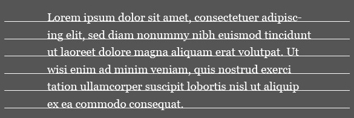
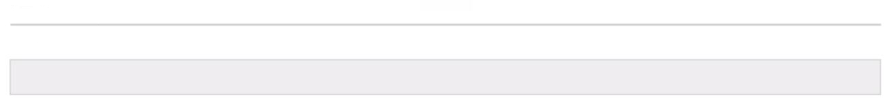
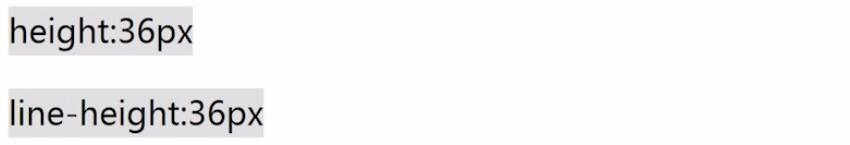
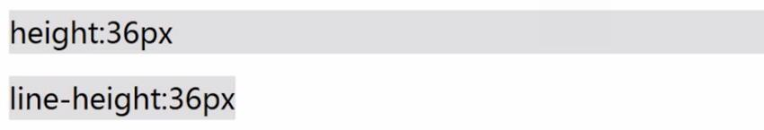

CSS透彻研究
line-height
——课件制作 杨少波
滑动效果选择
主题选择
一、什么是line-height?
定义:line-height即指行高，
也就是两行文字基线之间的距离。
定义三问？？？
one.什么是基线？
two.为何是基线？
three.需要两行吗？
基线
基线(Baseline)是大部分字母所“坐”在的，字体的下降部之上的直线。下图白色的直线就是基线。

为何是它呢？
除了基线，还有中线、底线...why
because:基线乃所有线定义之根本！
需要两行？
一行文字没有行高？
错!
行高由于其继承性，影响无处不在，即使单行文本也不例外。(详细可见后文的高度机理）
二、line-height与行内框盒子模型
| 1. | "内容区域" | (content area) |
| 2. | "内联盒子" | (inline boxes) |
| 3. | "行框盒子" | (line boxes) |
| 4. | "包含盒子" | (containing box) |
| 包含关系:4>3>2~1 | ||
内容区域
是一种围绕文字看不见的盒子，大小与font-size大小相关
内联盒子
它的作用是让内容排成一排，比如外部含inline的标签（span,a,em等），就属于"内联盒子"；而纯文字则属于"匿名内联盒子"。
行框盒子
每一行都是一个"行框盒子"，每个"行框盒子"又是由一个一个"内联盒子"组成。
包含盒子
<p>标签所在的"包含盒子"，此盒子由一行一行的"行框盒子"组成。
三、line-height的高度机理
是谁撑起了一片蓝天（元素高度）？
所谓实践出真知！
.test1{
font-size: 36px;
line-height: 0;
border: 1px solid #ccc;
background: #eee;}
.test2{
font-size: 0;
line-height: 36px;
border: 1px solid #ccc;
background: #eee;}
结果如下↓

所以说:
内联元素的高度是由
line-height
决定的！
那么，问题来了~
line-height定义
是两行之间，它是如何决定的呢？
需要知道的是:
1.行高由于其继承性，影响无处不在，即使单行文本也不例外；
2.行高只是幕后黑手，高度的表现不是行高，而是内容区域和行间距；
推↓出
content area + vertical spacing = line-height内容区域高度+行间距=行高
四、line-height各类属性值
line-height支持属性值
- normal
:默认属性值，跟着用户的浏览器走，且与元素字体关联。 - <number>
:使用数值作为行高值，根据当前元素的font-size大小计算，eg: line-height: 1.5;。 - <length>
:使用具体长度值作为行高值，eg: 1.5em、1.5rem、20px、20pt。 - <percent>
:使用百分比值作为行高值，基数为font-size，eg: 150%。 - inherit
:行高继承（IE8+），这样可以让文本框样式可控性更强。
五、line-height的实际应用
1.大小不固定的图片、多行文字垂直居中
图片:
line-height: middle;（基线网上1/2X高度，即中线）
多行文字:
与图片处理方式一样，将文字部分设置为与图片一样的display，即display: inline-block;
2.代替height，避免IE6/IE7下的haslayout
.out{display: inline-block;/* 或 float: left 等 */}
.in1{display: block; height: 36px;}
.in1{display: block; line-height: 36px;}
height:36px;
line-height:36px;
正确的姿势应该是:
IE6等浏览器下:
THE END
- thanks!